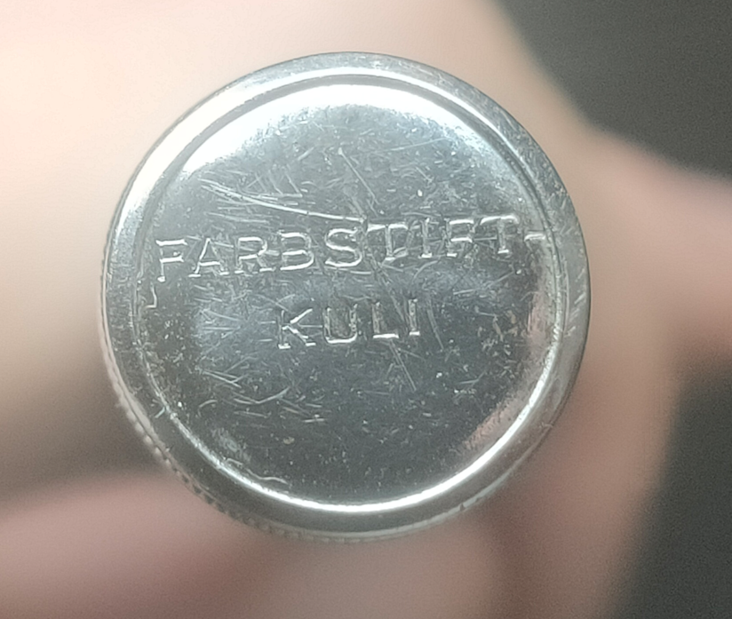

Rotring Vierfarbkugelschreiber und -Buntstifte
Deutsche und japanische Produkte
Stand: 05.06.2026
Die erste Welle Mehrfarbstifte (1930-1980)
Drehbuntstifte, später Kugelschreiber.| - Farbstift-Kuli Der erste. Waldmanns berühmtester Vierfarb-Drehbuntstift aus den 1930er Jahren. |
| - 4-Farb-Kuli Der zweite. Fast identisch mit dem Farbstift-Kuli, Hauptunterschied optisch (Stiftkörper). |
| - 2-Farb-Tikk-Kuli Blattfeder-Schieber-Kugelschreiber. |
| - 4-Farb-Tikk-Kuli Die Kugelschreiberversion des 4-Farb-Kuli (Drehmechanik), als auch verschiedene Schieberkugelschreiber. |
| - Visumatic Verschiedene Sichtwahl-Vierfarbkugelschreiber (ab 1950). |
| - Bezeichnungslose Mehrfarbkugelschreiber Günstige Schieberstifte mit Sperrhülse. |
Erste Hersteller waren Waldmann, Fend, Bossert&Erhard und Emil Ruf. Allesamt aus Pforzheim, Deutschland.
Um die 1960er ist noch ein Geha C4L-ähnlicher Stift bekannt, aber ich konnte den Stift noch nicht überprüfen.
Wieso heißt es eigentlich Kuli? Hier klicken für die Erklärung.
Die zweite Welle Mehrfarbstifte (1980-Heute)
Kugelschreiber-Druckbleistift-Kombinationen, selten ausschließlich Druckbleistiftmechanismen.| - 600 Trio Pen Der einzigartigste der neuen Welle mit Ablösemethode durch Drehen, Auswahlmethode durch Sichtwahl |
| - 600 3-in-1 Auswahl per Drehmechanismus wie dem Zebra Sharbo (gleiches Prinzip wie der Farbstift-Kuli/4-Farb-Kuli) |
| - Trio Pen, Newton Trio Pen, Tikky 3in1,... Sichtwahl mit Feststellung/Ablösung per Knopf seitlich am Stift |
| - Trio, Quattro, Quattro Executive, ... Sichtwahl mit Feststellung/Ablösung per Drücken auf die hintere Hälfte des Klipps |
| - Trio-Pen, Artos, Quattro-Pen,... Sichtwahl mit Feststellung/Ablösung per Knopf auf Klipp. |
Die Stiftbezeichnungen sind teils etwas gedoppelt.
Erstmals wird eine Druckbleistift-Option, ein Textmarker oder ein Stylus eingebaut.
Diese Stifte wurden sehr wahrscheinlich in Japan hergestellt, der Tikky3in1 in Taiwan.
Der Farbstift-Kuli
Als Rotrings Stylograph Tintenkuli in den 1930ern Beliebtheit erlangte, ließ Rotring Waldmann eine Version ihres USUS 'Farbenautomat' für sie herstellen.Bei Rotring wurde dieser "Farbstift-Kuli" genannt. Die Produktion muss um 1938 angefangen haben.




Anders als die üblichen Versionen von diesem Stift Waldmanns, verfügt diese über eine Aufschrift auf der Kappe, einen schwarzen Körper, den roten Ring (ein Stück umgelegtes Papier), und eine abnehmbare Vorderkappe.
4-Farb-Kuli
Auch der dem Farbstift-Kuli/Farbenautomat fast identische Nachfolger Waldmanns wurde für Rotring hergestellt.Er folgt adaptionstechnisch demselben Muster wie sein Vorgänger.

Beide Stifte wurden auch mit Walzgold hergestellt.
4-Farb-Tikk-Kuli
Unter dem Namen 4-Farb-Tikk-Kuli wurden verschiedene Vierfarbkugelschreiber verkauft, alle weiterhin von Waldmann.Einmal die Kugelschreiber-Version des 4-Farb-Kuli: (abgebilet nicht die Rotring-Version, diese war aber sehr ähnlich).

Und dann die Schieberkugelschreiber mit verstärkten Schieberschlitzen:

Weitere Stifte aus den Tabellen oben folgen evtl. in Zukunft.